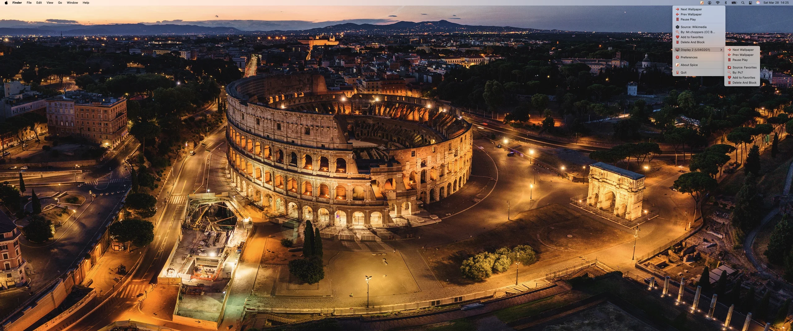
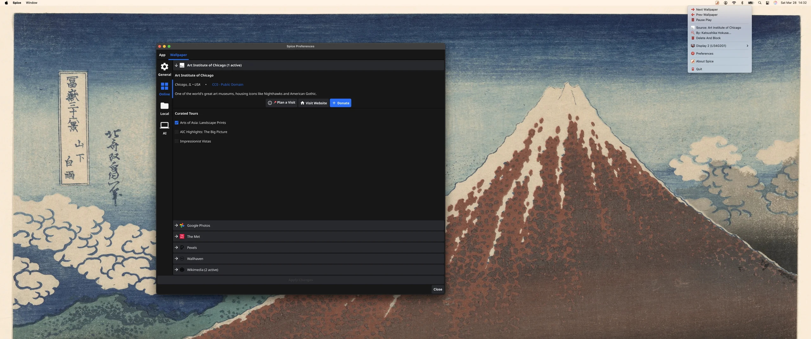
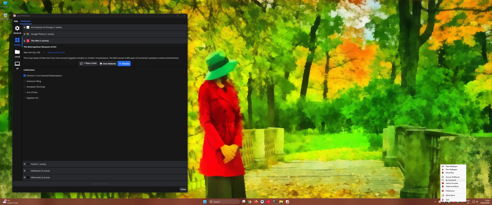
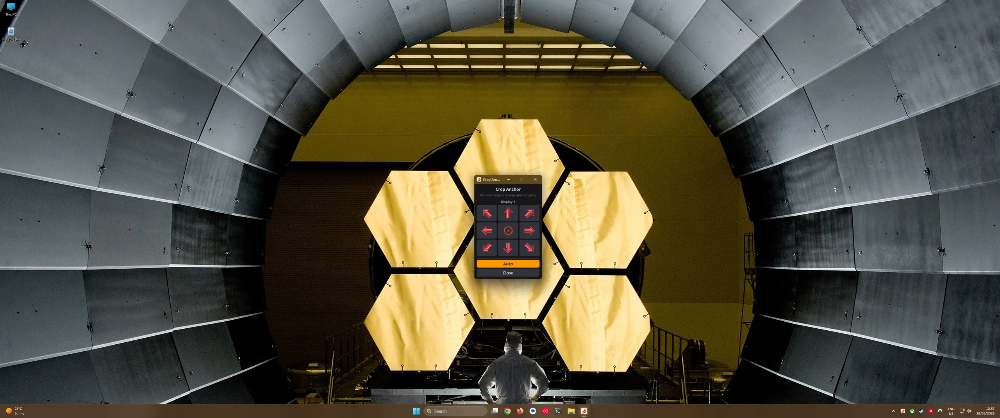
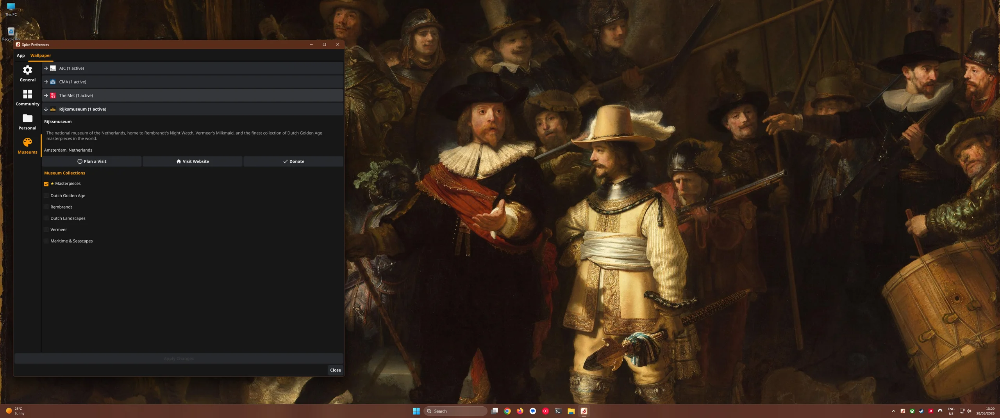

How It Works
Choose Your Sources
Pick from 12 providers — Wallhaven, Pexels, Google Photos, The Met, Art Institute of Chicago, Cleveland Museum of Art, Rijksmuseum, National Palace Museum, Getty Images, Wikimedia, local folders, or your favorites collection.
Set Your Schedule
Set a custom freeform minute-based schedule — or skip the timer and change wallpapers on-demand with global keyboard shortcuts.
Enjoy
Spice runs silently in your macOS menu bar or Windows system tray. Your desktop stays fresh without lifting a finger.
⚡ Featherweight Performance
Engineered in native Go to be completely invisible to your CPU. Spice processes massive 4K images in the background without dropping a single frame of your games or work.
🛡️ Local-First Privacy
Your API keys and personal Google Photos never leave your machine. All image cropping and AI face detection happens 100% locally on your hardware.
🔄 Auto-Cycling
Set your interval and Spice rotates wallpapers automatically. Your desktop stays fresh without lifting a finger.
🖥️ Multi-Monitor
Independent wallpapers for every display. Portrait monitors get portrait art. Ultrawide gets ultrawide compositions.
🖼️ Virtual Museum Frame
Display the entire uncropped image on a generated background. Automatically rescue extreme portraits and landscapes by framing them instead of cropping, preserving their original aspect ratio.
🔗 Browser Extension
See a wallpaper you love online? One click sends it straight to your desktop via Chrome, Firefox, or Safari.
📸 12 Sources
Wallhaven, Pexels, Google Photos, The Met, Art Institute of Chicago, Cleveland Museum of Art, Rijksmuseum, National Palace Museum, Getty Images, Wikimedia Commons, local folders, and favorites.
🧠 Smart Fit + Tune Image
Intelligent cropping detects faces and compositions automatically. Open the Tune Image popup to hint which region to keep when cropping using a 9-direction anchor grid, or enable the Virtual Museum Frame to display the entire uncropped image.
⌨️ Global Hotkeys
Next, previous, shuffle, favorite, info, or block — control your wallpapers from anywhere with global keyboard shortcuts.
Smart Fit Technology
Spice intelligently crops wallpapers to match your exact display — even ultrawide 21:9 monitors.

Companion Browser Extension
One-click any image online and send it straight to your desktop.